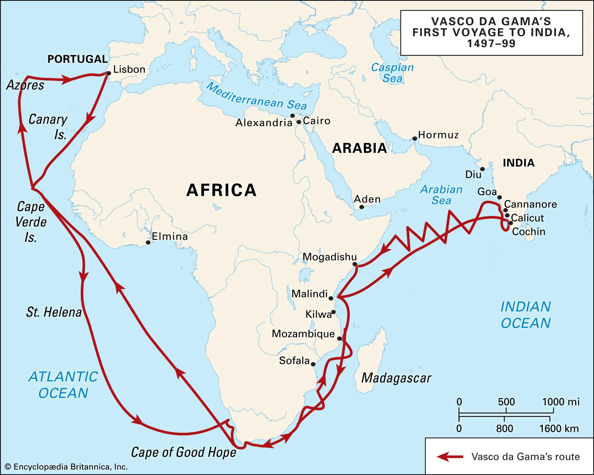

| Social Studies |  |
| India in Ancient days | Why did people travel to India in ancient times? |
People traveled to India for many reasons, including:
Pleasant weather: India attracted the world due to its pleasant weather.
Trade and Commerce: India was known for its wealth and resources, including spices, textiles, and precious stones. Traders from regions like Greece, Rome, Persia, and China traveled to India to engage in commerce and establish trade routes.
Religious Pilgrimages: India was a significant center for Buddhism, Hinduism, and later, Islam. Pilgrims from China, Southeast Asia, and the Middle East traveled to India to visit sacred sites, study religious texts, and seek spiritual enlightenment.
Education and Knowledge: Ancient India was home to renowned centers of learning, such as Nalanda and Takshashila. Scholars and students from various parts of the world came to study subjects like mathematics, astronomy, medicine, and philosophy.
Cultural Exchange: Travelers were also motivated by the desire to experience and document the rich cultural heritage of India. They were fascinated by India’s diverse traditions, languages, and customs, which they recorded in their travelogues.
Trade: India was a hub for trade networks, including the Silk Road, and was known for its wealth of spices, textiles, and precious stones.
Religious pilgrimage: India was a center for Buddhism, Hinduism, and Islam, and pilgrims traveled to visit sacred sites and study religious texts.
Cultural exchange: India's rich cultural heritage, including its art, philosophy, and traditions, fascinated travelers.
Scientific learning: India was home to renowned centers of learning, such as Nalanda and Takshashila, and was known for its advances in astronomy, mathematics, and medicine.
Political missions: Emissaries were sent to establish political and economic ties with Indian kingdoms.
Historical documentation: Travelers recorded observations about ancient Indian society, geography, and history.
These motivations highlight India’s historical significance as a hub of economic, spiritual, and intellectual activity.
The British first came to India in the early 1600s with the intention of trading with the East Indies and expanding British influence. The British East India Company was established in 1600 with a royal charter from Queen Elizabeth I. The company's main goal was to trade with India, particularly for spices, which were a vital commodity in Europe at the time. The company also traded in silk, cotton, indigo dye, tea, and opium.
Xuanzang- A 7th century Buddhist monk, scholar, and translator who traveled to India from 629–645 CE. He traveled to learn about Buddhism, collect Buddhist manuscripts, and pay homage to sacred Buddhist sites. He documented his experiences in a travelogue that provides insights into Indian culture, religion, politics, and society.
Vasco da Gama was the first European to sail from Portugal to India via the Atlantic Ocean: Voyage-- In 1497, Vasco da Gama set sail from Lisbon, Portugal, to find a sea route to India. He rounded the Cape of Good Hope, stopped in Africa, and reached Calicut, India in May 1498.
Tenjiku Tokubei (1612–1692) was a famous Japanese merchant-adventurer who traveled to India. He chose the name Tenjiku Tokubei to show his reverence for India, which the Japanese called "Tenjiku" or "Heavenly Land" in ancient times.
GEOGRAPHICAL ROUTES THROUGH WHICH FOREIGNERS VISITED INDIAIn 1497, Vasco da Gama set sail from Lisbon, Portugal, to find a sea route to India. He rounded the Cape of Good Hope, stopped in Africa, and reached Calicut, India in May 1498.
John Mildenhall-- One of the first British travelers to travel overland to India. He traveled through Eastern Europe, Constantinople, Aleppo, and other places before reaching Lahore in 1603.
The British traveled to India by sea and land using a variety of routes, for example, The Cape Route This route passed the Cape of Good Hope and Cape Agulhas, which are located at the southern edge of Africa. It was also known as the European-Asian sea route or the sea route to India.